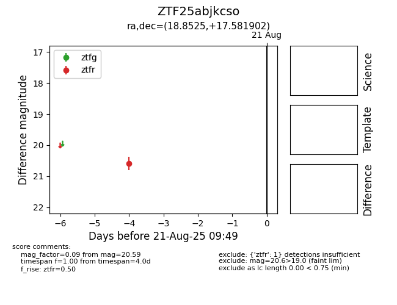

Target ZTF25abjkcso at 2025-08-21 09:49, see:
FINK: fink-portal.org/ZTF25abjkcso
Lasair: lasair-ztf.lsst.ac.uk/objects/ZTF25abjkcso
ALeRCE: alerce.online/object/ZTF25abjkcso
alt names
ZTF25abjkcso (ztf,alerce)
coordinates:
equatorial (ra, dec) = (18.8525,+17.58190)
galactic (l, b) = (131.0113,-44.91345)
photometry
last ztfr=20.59
1 ztfr detections
